Die Kunst des einfühlsamen Zuhörens und Sprechens
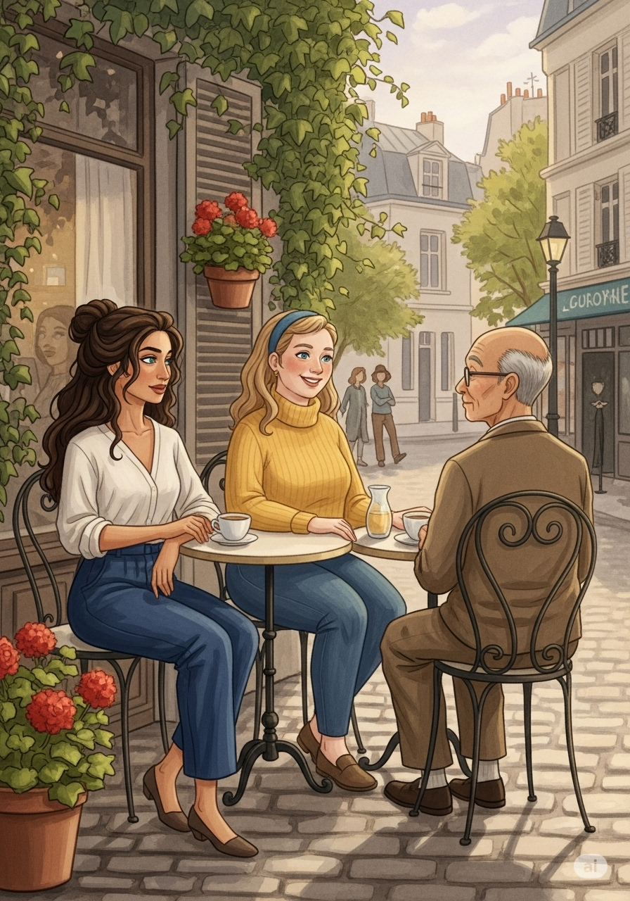
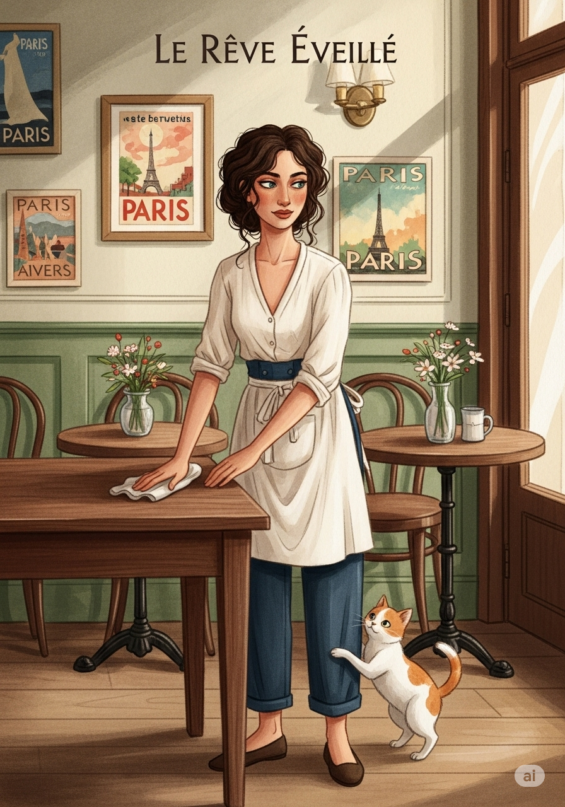
Es war ein ruhiger Nachmittag im Pariser Café "Le Rêve Éveillé", wo Zaminia gerade ihre Schicht beendete. Draußen auf der Terrasse versammelten sich ihre Freunde: Mia, die Restauratorin aus Brügge, Zenjio, der Zen-Meister, und Luna, Zaminias kleine Katze mit weißem Fell und roten Flecken. Die Herbstsonne warf sanfte Strahlen über die Stadt, während der Duft von frischen Croissants die Luft erfüllte.
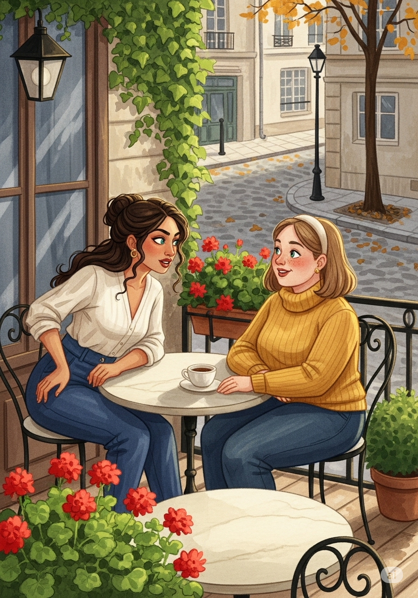
„Ich habe heute eine Frage für uns alle“, begann Zaminia, während sie sich zu ihnen setzte. Ihre blau-grünen Augen funkelten vor Neugier. „Was bedeutet es, wirklich zuzuhören?“
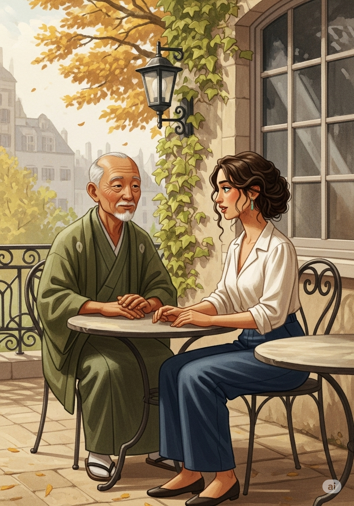
Zenjio lächelte. „Zuzuhören ist wie den Wind zu spüren. Man kann ihn nicht greifen, aber man weiß, dass er da ist. Es geht darum, präsent zu sein und ohne Urteil zuzuhören.“
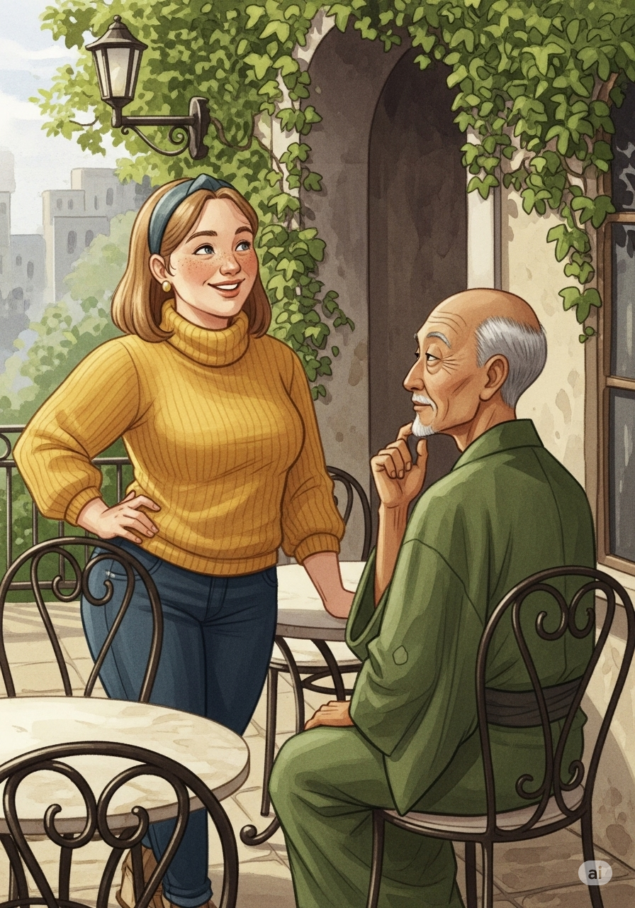
Mia nickte nachdenklich. „Beim Restaurieren muss ich auch zuhören – aber auf eine andere Weise. Ich höre auf die Geschichte, die die Kunstwerke erzählen wollen. Es erfordert Geduld und Hingabe.“
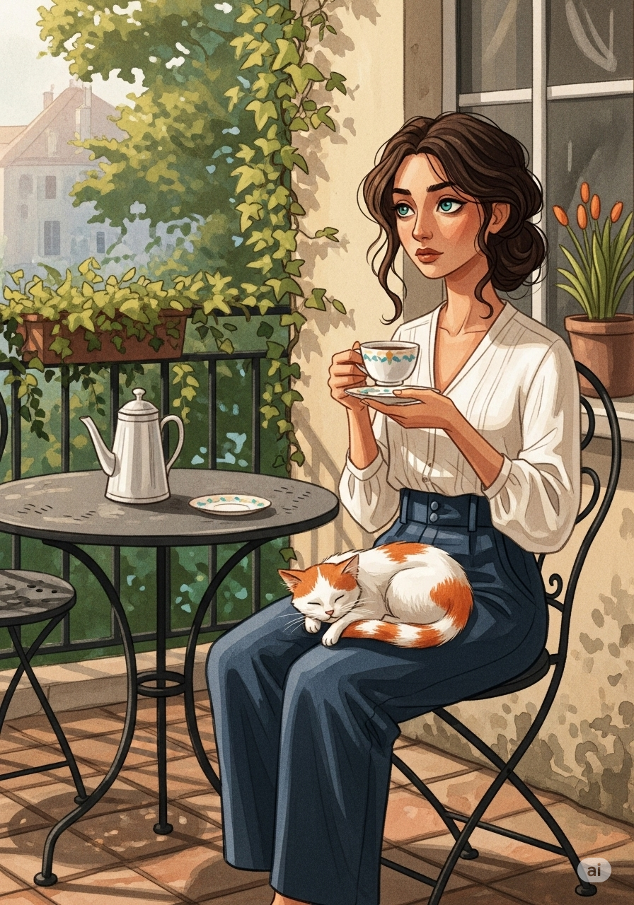
Zaminia nahm einen Schluck von ihrem Tee und schaute in die Runde. „Und wie können wir sicherstellen, dass das, was wir sagen, liebevoll und achtsam ist?“
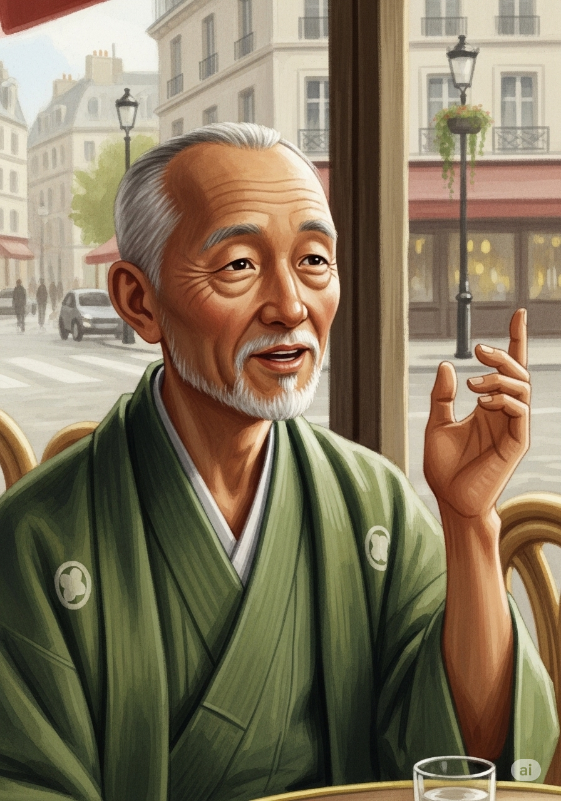
Zenjio antwortete sanft: „Achtsam sprechen bedeutet, sich bewusst zu sein, wie unsere Worte den anderen beeinflussen. Es geht nicht nur darum, was wir sagen, sondern auch darum, wie wir es sagen. Worte können heilen oder verletzen. Sie sind wie Pinselstriche in der Kunst: Jeder Strich hat eine Bedeutung.“
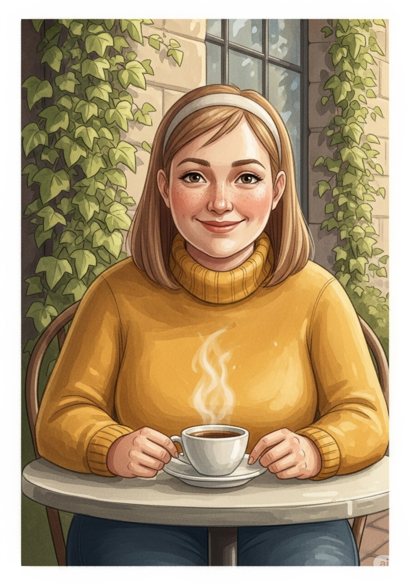
„Wie ein Dialog zwischen Vergangenheit und Gegenwart“, ergänzte Mia. „Manchmal braucht es nur ein Wort, um jemandem Trost zu spenden.“
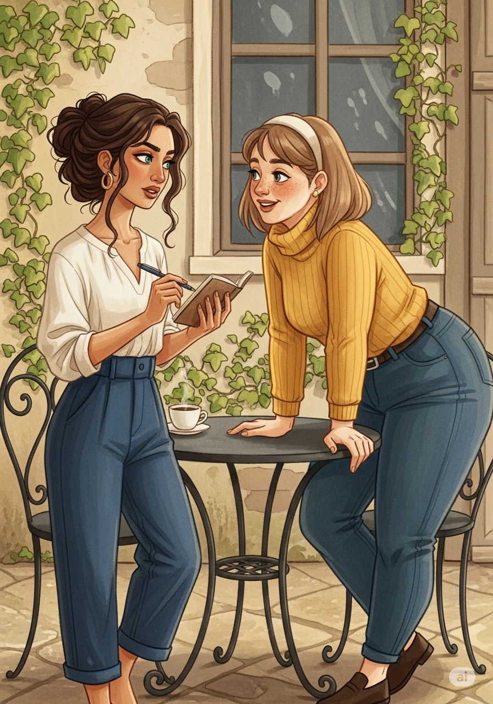
Die Gruppe blieb eine Weile still, jeder in Gedanken versunken. Dann holte Zaminia ein kleines Notizbuch hervor. „Ich möchte etwas Neues versuchen. Wie wäre es, wenn wir alle drei eine Woche lang bewusst darauf achten, wie wir zuhören und sprechen? Und dann teilen wir unsere Erfahrungen?“
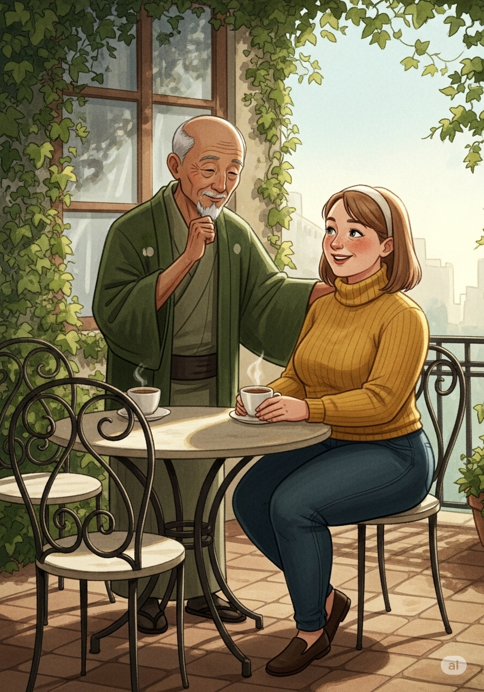
Zenjio nickte. „Eine wunderbare Idee. Es ist ein Weg, den Zen-Dialog wirklich zu leben.“ „Ich bin dabei“, sagte Mia und lächelte. „Vielleicht finde ich dadurch auch neue Inspiration für meine Arbeit.“
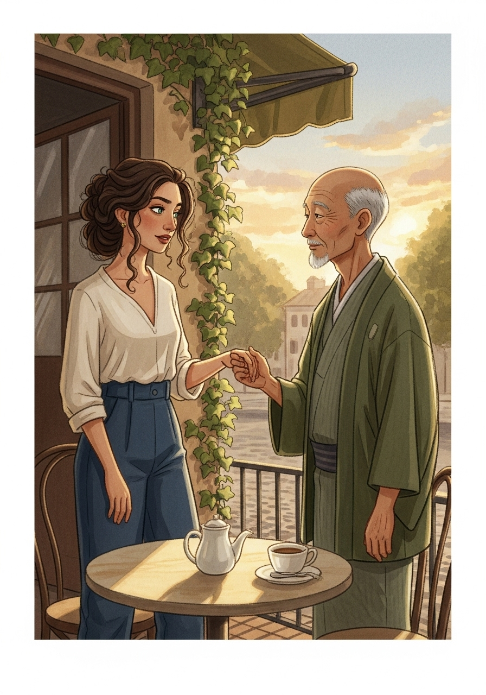
So begann ihre gemeinsame Reise, die Kunst des Zuhörens und Sprechens auf eine neue Ebene zu bringen. Jeder von ihnen fand auf diesem Weg nicht nur neue Einsichten über sich selbst, sondern auch über die tiefe Verbindung, die entsteht, wenn man wirklich achtsam mit anderen kommuniziert.
— ENDE —
- Finis -